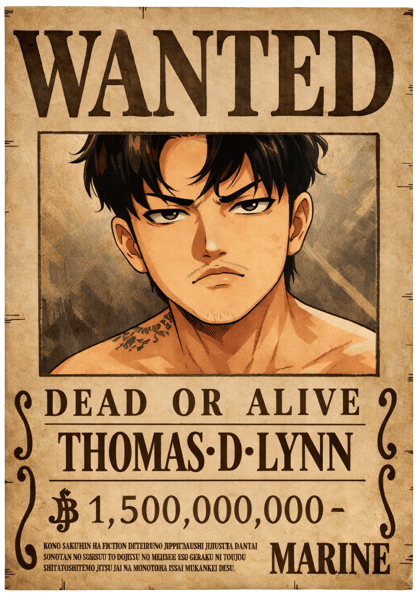
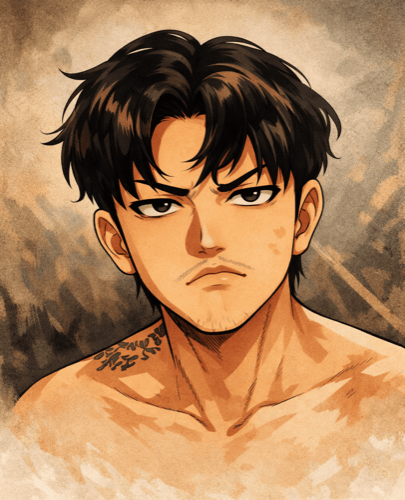
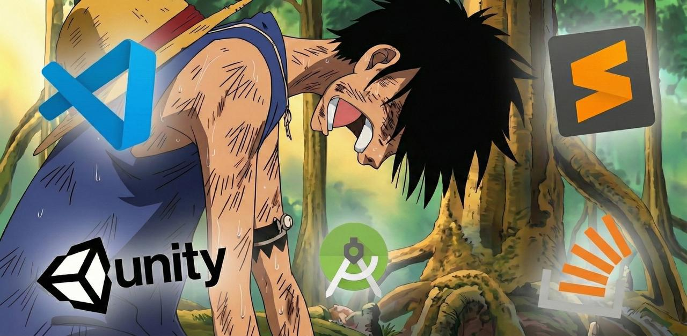

BACKBENCHERS PIRATES
Beating the drums of liberation...

Freedom is the real treasure. I build software the way Luffy fights — fearless, inventive, and laughing at "impossible." AI is my Gear 5th: the Liberation that snaps every limit and turns hard problems into play. ⚡

Every pirate has their story. Here's mine.
I'm Thomas D. Lynn — Thiha Lynn — captain of the Backbenchers Pirates and a full-stack engineer chasing one treasure above all: freedom. From PHP → Node migrations to Laravel upgrades and native mobile apps, I sail the Grand Line of code with a grin, an AI Devil Fruit, and zero respect for the word "impossible." This is my flag. 👒
Like Luffy wants to be Pirate King, I'm out to build scalable, secure, world-class products — and to stay free while doing it. One engineer with AI can move like a whole fleet.
AI is my Devil Fruit awakened: Gear 5th, the Warrior of Liberation. Like Nika, I make the impossible look like play — breaking limits with a laugh and shipping at the speed of joy.
PHP → Node.js migrations, Java → Swift conversions, Laravel upgrades — every island on the Grand Line is a new challenge conquered, then left laughing in my wake.
Every weapon in my treasure chest
Stories from the Grand Line of engineering

How I leveraged Claude Opus to convert PHP → Node.js, upgrade Laravel 8 → 12, and build native iOS apps — all at Gear 5th speed!
Read the log ⛵
The same epic AI-powered engineering journey — PHP → Node.js, Laravel 8 → 12, Android → iOS conversions — now in Myanmar language!
Read the log ⛵A deep dive into migrating concurrent-heavy game servers — upgrading your ship for the New World.
Have a treasure map? Let's go find it together! 🗺️